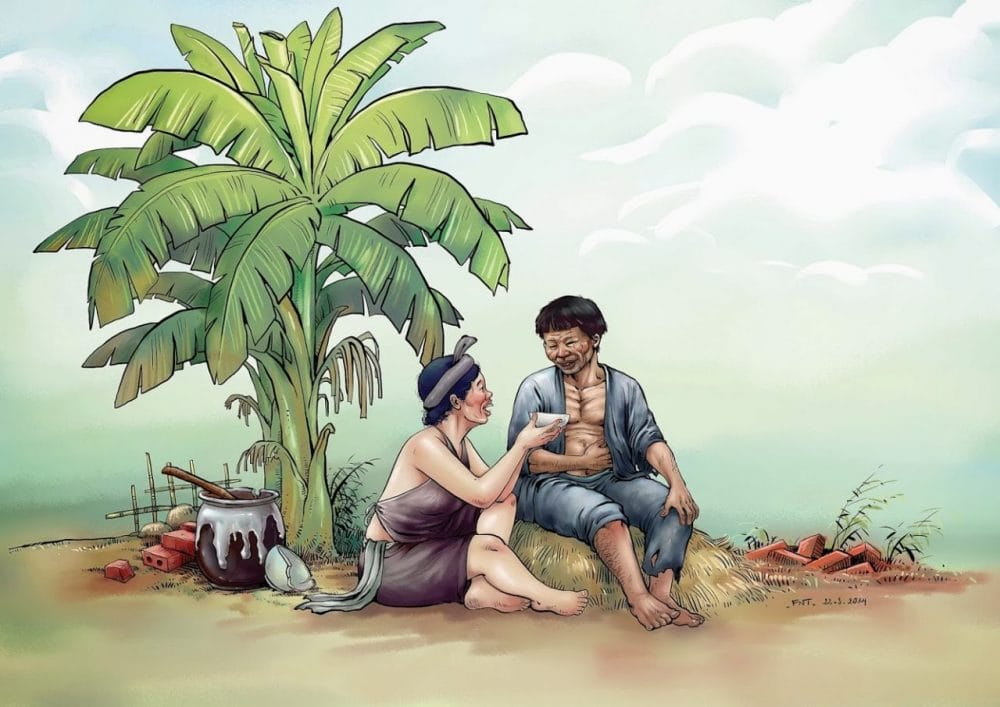
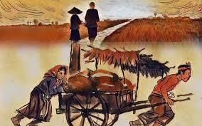
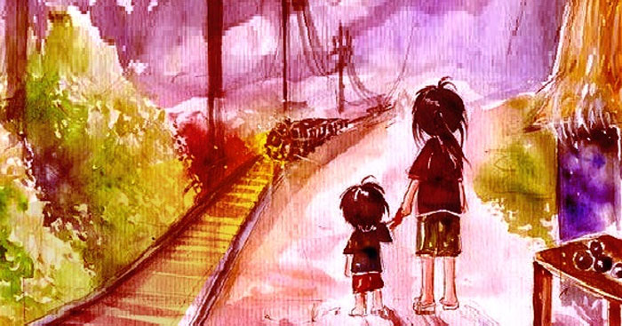

Chí Phèo - Bi kịch bị cự tuyệt quyền làm người
Chí Phèo không chỉ là câu chuyện về một con quỷ dữ của làng Vũ Đại, mà còn là bản án đanh thép tố cáo xã hội thực dân phong kiến tàn bạo đã đẩy người nông dân lương thiện vào bước đường cùng...

Chí Phèo không chỉ là câu chuyện về một con quỷ dữ của làng Vũ Đại, mà còn là bản án đanh thép tố cáo xã hội thực dân phong kiến tàn bạo đã đẩy người nông dân lương thiện vào bước đường cùng...


Tiểu thuyết trào phúng xuất sắc nhất của nền văn học Việt Nam. Qua sự vươn lên nực cười của Xuân Tóc Đỏ, tác giả vạch trần bản chất giả dối, lố lăng của giới tư sản thành thị lúc bấy giờ.

Bối cảnh nạn đói khủng khiếp năm 1945. Giữa lúc ranh giới sống chết mong manh như sợi tóc, tình người và khát khao hạnh phúc gia đình vẫn bừng sáng qua câu chuyện nhặt vợ của anh cu Tràng.

Một truyện ngắn đầy chất thơ, tinh tế và u buồn. Câu chuyện quẩn quanh nơi phố huyện nghèo xơ xác và niềm khao khát đợi chờ một chuyến tàu đêm đi qua - biểu tượng của một thế giới đáng sống hơn.
Bạn chưa theo dõi nhà văn nào. Hãy khám phá diễn đàn nhé!
Vai trò

Dữ dội và dịu êm... Những câu thơ dường như đã nói hộ lòng của biết bao người phụ nữ khi yêu. Một góc nhìn cá nhân về bài thơ tình bất hủ.
Chào mừng bạn gia nhập cộng đồng Chạm Văn Chương. Khám phá các tác phẩm kinh điển ngay!
Bạn chưa lưu tác phẩm nào.